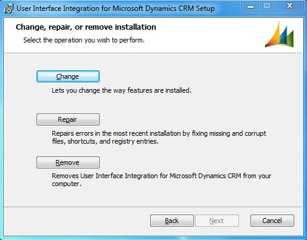

After you install the UII client components, you will need to maintain them. You can change the way features are installed and repair errors when they occur.
There are three types of maintenance:
- Change – Use this type of maintenance to add or remove components from the current installation.
- Repair – Use this type of maintenance to repair the errors that occurred during the previous installation. You can also use it to repair corrupted files.
- Remove – Use this type of maintenance to remove the UII components from a computer.
These options are available on the Change, repair, or remove installation page (see the following illustration).

To maintain UII components
- Run CRMv2011-UII-i386-1033.msi (for 32-bit computers) or CRMv2011-UII-amd64-1033.msi (for 64-bit computers).
- On the Welcome to the User Interface Integration for Microsoft Dynamics CRM Setup Wizard page, click Next.
- On the Change, repair, or remove installation page, make any required changes, as explained in the next procedure.
To change the features
- On the Change, repair, or remove installation page, click Change.
- The Custom Setup page appears, showing the list of available UII features. The components that are installed on the system are preselected; the other components are not selected. Select the components that you want to change, and then click Next.
- On the Pre-Requisites page, click Next.
- The Ready to Change Microsoft User Interface Integration page appears. Click Change.
- The Completed the Microsoft User Interface Integration Setup Wizard page appears, displaying the message "All selected components were successfully changed." Click Finish.
 Note: Note: |
|---|
| Prerequisite checking does not happen while you add new features. You must manually complete this step. For more information, see the Software Requirements section. |
To repair the setup
- Run CRMv2011-UII-i386-1033.msi (for 32-bit computers) or CRMv2011-UII-amd64-1033.msi (for 64-bit computers).
- On the Welcome to the User Interface Integration for Microsoft Dynamics CRM Setup Wizard page, click Next.
- On the Change, repair, or remove installation page, click Repair.
- The Completed the Microsoft User Interface Integration Setup Wizard page appears, displaying the message "The installed components were successfully repaired." Click Finish.
To remove the setup
- Run CRMv2011-UII-i386-1033.msi (for 32-bit computers) or CRMv2011-UII-amd64-1033.msi (for 64-bit computers).
- On the Welcome to the Microsoft User Interface Integration Setup Wizard page, click Next.
- On the Change, repair, or remove installation page, click Remove.
- The Completed the Microsoft User Interface Integration Setup Wizard page appears, displaying the message "All selected components were successfully removed." Click Finish.